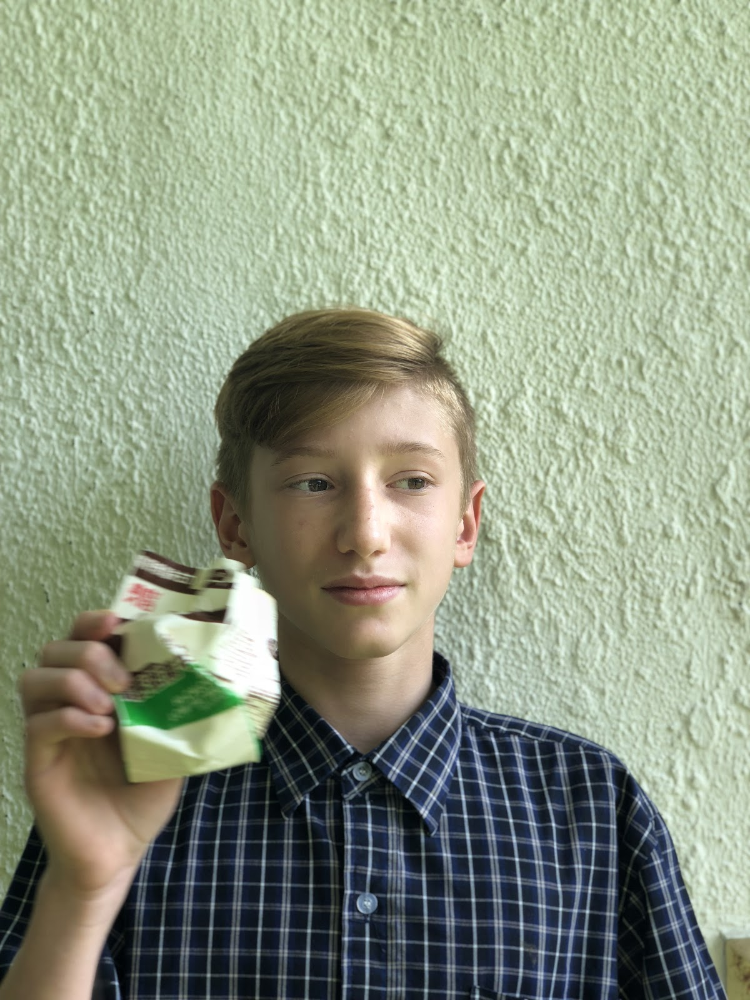
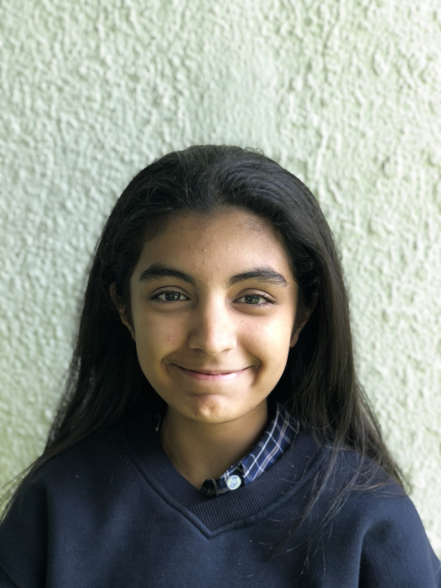

Year 10 student, currently studying at West Island School, Hong Kong Letitia Mok is the current chairman and co-founder of the company JELTECH. In addition to leading the JELTECH team, she is also responsible for designing the first drafts of both models of the CopyWrite. Letitia is fluent in English, Mandarin and Cantonese, which will prove efficient in the Chinese, Taiwanese and Hong Kong markets.
Year 10 student, currently studying at West Island School, Hong Kong Ethan Dow is the current Marketing Manager of the company JELTECH. He is responsible for most of the market research and marketing methods. In addition to helping our company find the perfect mearket, he is also responsible for making the appropriate edits in the design of both models of the CopyWrite. Ethan is fluent in English and Spanish, which will prove efficient in the Latin markets.
Year 10 student, currently studying at West Island School, Hong Kong Jonathan Nicholls is the current Head of R&D of the company JELTECH. He is responsible for computer modelling/designing and the technological know-hows. In addition, he is also responsible for the refining of designs and engineering aspects of the CopyWrite. Jonathan is fluent in English and French along with a little German, which will prove efficient in German and French speaking countries markets. He is currently studying an IGCSE in Computer Science and a BTEC Level 2 Diploma in Engineering. He is skilled in many programming languages, including Python, Java, and Web-based languages (HTML, CSS, JavaScript and jQuery), which will prove helpful in marketing and communication with the customers.
Year 10 student, currently studying at West Island School, Hong Kong Tiana Dayaram is the current Chief Financial Officer and Head of logistics of the company JELTECH. She is responsible for the draft pitch and the presentation. In addition, she is also responsible for designing our logo. Tiana is fluent in English and Tagalog, which will prove efficient in the Filipino markets.